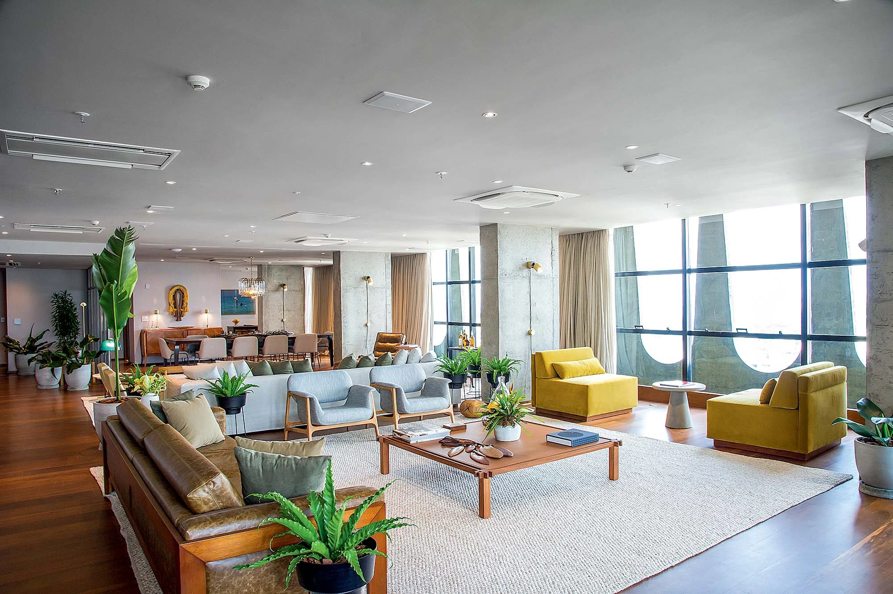
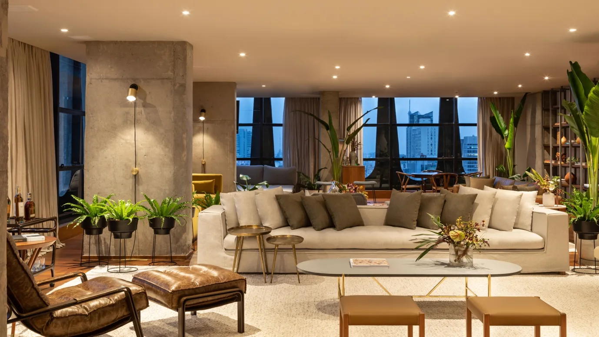
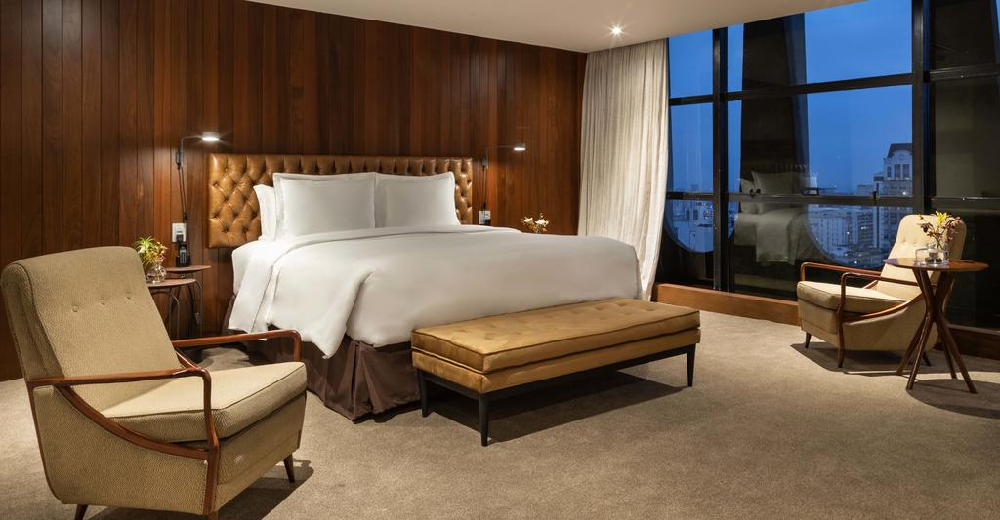
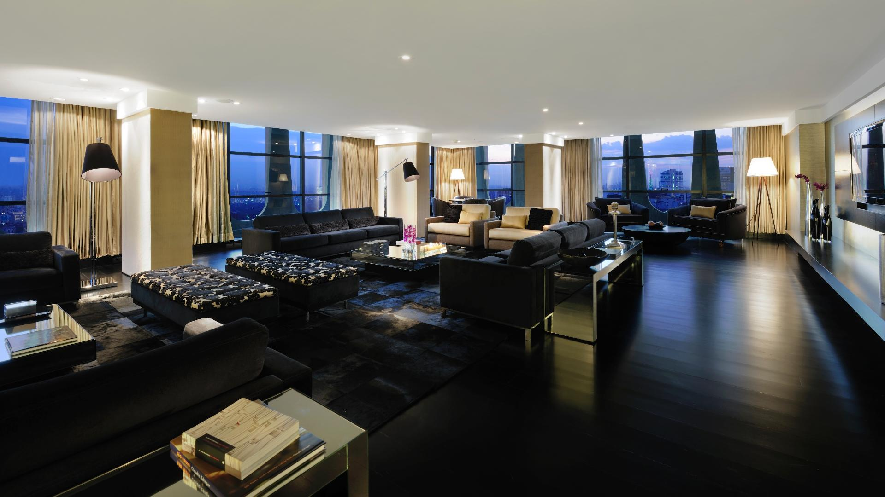

The luxury in the form of a room - Unisalesiano
   Localizada no 22 andar do Unisalesiano Hotel, a Suíte Presidencial The luxury in the form of a room é sinônimo de requinte e exclusividade, num ambiente perfeito de elegância soberba. A vista é considerada uma das mais belas da cidade e as suas janelas estendem-se do teto ao chão.